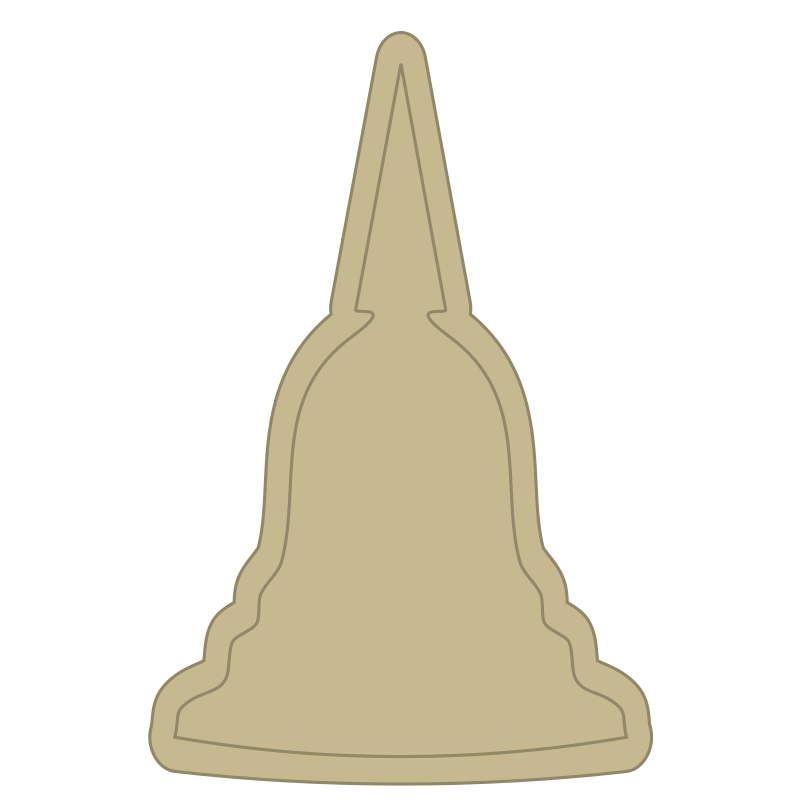

Legend ▼
Cathedral
 Stupa
Synagogue
Statue
Build start
Build end
Destroyed
Explore the height of religious buildings throughout history, from the Great Pyramid of Giza to the Sagrada Família.
Navigation:
• The left panel can be resized using the grab bar.
• Refer to the collapsable legend for icon meanings and construction/destruction timeline colours.
• Move the timeline slider through the centuries to see when each structure was begun, completed, or destroyed.
• ⏮ Reset the slider
• ▶/⏸ Play or pause the timeline
• 1x–8x Adjust playback speed
• ◀/▶ Step backwards/forwards one year
• +/– Adjust zoom level
• Use the filters to focus on specific continents or religions.
• Click any marker on the map to view detailed information.
Inclusion criteria: Buildings must either be a place of worship, statue representing a religious figure, burials of religious significance, or residences for religious leaders. The single highest point is taken for each building. The 100 buildings selected are not strictly the tallest ever constructed; Religious significance, historical context and editorial judgement guided the selection.
Technical clarifications: Height over time is modelled as a linear progression between construction start and construction end. The dataset was constructed primarily from Wikipedia pages, with additional sources used where crucial information was missing or ambiguous. Copliot assisted in this project by refining parts of the syntax and data structure.
Click any building from the list to zoom to its location and view full details.